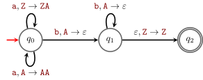

19 Pushdown Automata
% noend hides “end for”; drop it to keep them
In this chapter we show an equivalent way to describe the class of context-free languages (via the pushdown automata), we show that they are equivalent to context-free grammars, we show some further closure properties of context-free languages. This characterization of context-free languages via pushdown automata allows to define a natural special case of them which are the deterministic context-free languages.
This page is really a draft. It will be updated later in the course.
A pushdown automaton is an \varepsilon-NFA (see Chapter 9) which is also allowed access to an external working memory in the form of a stack.
Not 2 stacks, not a queue. Only one stack.
Transitions have the following form
What we use here is the notation from Sipser (2013). The RACSO uses a different syntax to describe transitions (see here). The transition of Figure 19.1, would be denoted as \textcolor{darkred}{\mathtt{T}}\textcolor{darkred}{\mathtt{s}}\vert \alpha.
which means:
In state q, when reading the symbol \textcolor{darkred}{\mathtt{s}} and the top of the stack is the symbol \textcolor{darkred}{\mathtt{T}}, move to state q', pop \textcolor{darkred}{\mathtt{T}} from the stack and push into the stack the word \alpha.
Similarly,
means
In state q, without reading any symbol, if the top of the stack is the symbol \textcolor{darkred}{\mathtt{T}}, move to state q', pop \textcolor{darkred}{\mathtt{T}} from the stack and push into the stack the word \alpha.
The alphabet of the words we feed to the PDA and the stack are usually different. The convention is to use upper-case letters to denote the stack alphabet.
We also want to know when the stack is empty, to do so the convention is to have a symbol (usually denoted as \textcolor{darkred}{\mathtt{Z}}) to mark the bottom of the stack. We never want to pop \textcolor{darkred}{\mathtt{Z}}, that is, in transitions such as the ones of Figure 19.1 or Figure 19.2, if \textcolor{darkred}{\mathtt{T}} is \textcolor{darkred}{\mathtt{Z}}, then \alpha should start with \textcolor{darkred}{\mathtt{Z}}.
The formal definition of a pushdown automata is the following.
Definition 19.1 (PDA, pushdown automaton) A tuple A=(Q,\Sigma,\Gamma,\delta,q_0,\textcolor{darkred}{\mathtt{Z}},F) is PDA, or pushdown automaton, if
- Q is a finite set of states;
- \Sigma is a non-empty finite set (called the input alphabet);
- \Gamma is a non-empty finite set (called the stack alphabet);
- \delta is a finite subset of Q\times (\Sigma\cup\{\varepsilon\})\times (\Gamma\cup\{\varepsilon\})\times Q\times \Gamma^* (called transition relation);
- q_0\in Q (the starting state);
- \textcolor{darkred}{\mathtt{Z}}\in \Gamma (the bottom of stack symbol);
- F\subseteq Q a set of accepting states.
In some texts the transition relation is replaced by an equivalent formalization, the transition function given by \delta'\colon Q\times (\Sigma\cup\{\varepsilon\})\times (\Gamma\cup\{\varepsilon\}) \to \mathscr{P}^{\mathrm{fin}}(Q\times \Gamma^*)
Given a PDA A, to describe how to use it to accept words in \Sigma^* we need the notion of instantaneous description, which informally is the current state the machine is in. It is a triple (q,x,\alpha)\in Q\times \Sigma^*\times \Gamma^* and the meaning is that
The PDA is in state Q, the repaining part of the input to read is x, and the current content of the stack is \beta.
When reading w, the instantaneous description at the beginning is (q_0,w,\textcolor{darkred}{\mathtt{Z}}), meaning that we are in the initial state of the PDA A, we still have to read the whole w, and the stack is empty (only \textcolor{darkred}{\mathtt{Z}}, the symbol marking the bottom of the stack, is in it).
Following a transition as the one in Figure 19.1 we go from the instantaneous description (q,\textcolor{darkred}{\mathtt{s}}y,\beta\textcolor{darkred}{\mathtt{T}}) to the instantaneous description (q^\prime,y,\beta\alpha). We denote this with the notation (q,\textcolor{darkred}{\mathtt{s}}y,\beta\textcolor{darkred}{\mathtt{T}}) \vdash_A (q^\prime,y,\beta\alpha)\ .
Similarly, following a transition as the one in Figure 19.2 we go from the instantaneous description (q,y,\beta\textcolor{darkred}{\mathtt{T}}) to the instantaneous description (q^\prime,y,\beta\alpha). We denote this with the notation (q,y,\beta\textcolor{darkred}{\mathtt{T}}) \vdash_A (q^\prime,y,\beta\alpha)\ .
Definition 19.2 The language accepted by a PDA A=(Q,\Sigma,\Gamma,\delta,q_0,\textcolor{darkred}{\mathtt{Z}},F) (denoted by \mathscr{L}(A)) is the set of all words w\in \Sigma^* with the property that there exists a sequence \mathrm{ID}_0,\dots,\mathrm{ID}_m of instantanous descriptions s.t.
- \mathrm{ID}_i \vdash_A \mathrm{ID}_{i+1} for each 0\leq i\leq m-1;
- \mathrm{ID}_0=(q_0,w,\textcolor{darkred}{\mathtt{Z}});
- \mathrm{ID}_m=(q,\varepsilon,\alpha) with q\in F.
Exercise 19.1 (🌱) Show that if L is a regular language then there is a PDA A s.t. \mathscr{L}(A)=L.
Exercise 19.2 What is the language \mathscr{L}(A) accepted by the gollowing PDA A?

Exercise 19.3 Write a PDA A s.t. \mathscr{L}(A)=\{w\in \{\textcolor{darkred}{\mathtt{a}},\textcolor{darkred}{\mathtt{b}}\}^* :w=w^R\}.
19.1 PDAs and CFGs are equivalent models
In this section we show that contxt-free grammars and pushdown automata have the same expressive power. In the sense of Theorem 19.1 and Theorem 19.2 below.
Theorem 19.1 Let L\subseteq \Sigma^*. If there is a CFG G s.t. \mathscr{L}(G)=L, then there is a PDA A s.t. \mathscr{L}(A)=L.
Exercise 19.4 Using the construction in the proof of Theorem 19.1 give a PDA accepting the same language as the grammar S\ \boldsymbol{\to}\ \textcolor{darkred}{\mathtt{a}}S\textcolor{darkred}{\mathtt{b}}\ \vert\ \varepsilon.
Theorem 19.2 Let L\subseteq \Sigma^*. If there is a PDA A s.t. \mathscr{L}(A)=L, then there is a context-free grammar G s.t. \mathscr{L}(G)=L.
Exercise 19.5 Using the construction in the proof of Theorem 19.2 give a CFG accepting the same language as the PDA in Figure 19.3.
19.2 Closure properties
In this section we conclude the closure properties of context-free languages (see Table 16.1).
Theorem 19.3 The intersection of a context-free language with a regular language is context-free, that is if L\in \mathbf{CFL} and L'\in \mathbf{Regular}, then L\cap L'\in \mathbf{CFL}.
Exercise 19.6 Fill the details of the proof sketch of Theorem 19.3.
Theorem 19.4 The inverse image of a context-free language under a homomorphism is context-free.
19.3 \mathbf{DCFL} – Deterministic Context-Free Languages
In this section we recall properties of deterministic PDAs. Intuitively, similarly to DFAs, a PDA is deterministic there are never options for the transitions to take. In other words, if for every q\in Q and instantaneous description \mathrm{ID}=(q,x,\alpha) there is at most one instantaneous description \mathrm{ID}' s.t. \mathrm{ID}\vdash_A\mathrm{ID}'.
Definition 19.3 (\mathbf{DCFL} – Deterministic Context-Free Languages) A CFL L is deterministic if there exist a deterministic pushdown automata A s.t. \mathscr{L}(A)=L. \mathbf{DCFL} is the set of all deterministic context-free languages (over a fixed alphabet).
The interest in \mathbf{DCFL} is practical: parsing for languages in \mathbf{DCFL} can be done in linear time.
Exercise 19.7 Is the PDA in Figure 19.3 deterministic?
Exercise 19.8 Show that \mathbf{Regular}\subsetneq \mathbf{DCFL}.
Exercise 19.9 (🔥) Show that \mathbf{DCFL} is closed under complement and use this fact to conclude that \mathbf{DCFL}\subsetneq \mathbf{CFL}.
The obvious construction of interchanging final and non-final states does not work immediately. The point is that a deterministic pushdown automata is close to a DFA but not exactly!
Similarly as we did for CFL in Table 16.1, we give a table summarizing the closure properties of \mathbf{DCFL}.
| is \mathbf{DCFL} closed under | ||
|---|---|---|
| union? | no ❌ | Exercise 21.3 |
| concatenation? | no ❌ | |
| Kleene star? | no ❌ | |
| intersection? | no ❌ | Exercise 21.2 |
| intersection with a regular language? | yes ✅ | Exercise 19.10 |
| complement? | yes ✅ | Exercise 19.9 |
| reversal? | no ❌ | |
| homomorphism? | no ❌ | |
| inverse homomorphism? | yes ✅ |
Some of the closure and non-closure properties of \mathbf{DCFL} summarized in this table are left as exercises with hints. For the remaining ones see (Hopcroft et al. 2007).
Exercise 19.10 Show that \mathbf{DCFL} closed for intersection with a regular language.